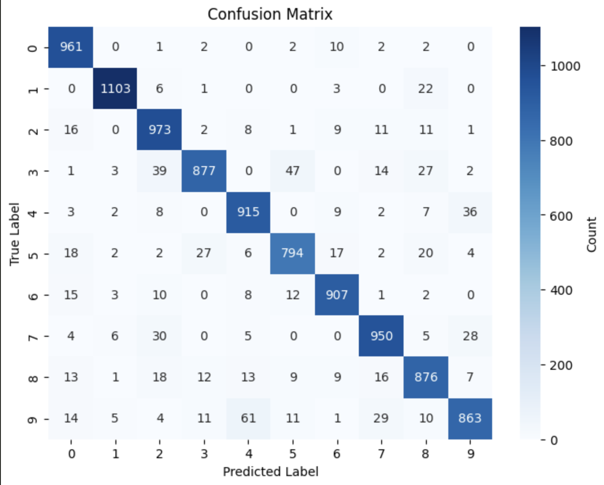

Machine Learning Homework
For this homework you will be training and testing a machine learning model that will be able to predict handwriting using the MNIST dataset.
Step 1: Setup
- run
pip install -r requirements.txt - Go to the file mnist.ipynb in nbs
- Run the first code block with the imports and make sure it is successful
Step 2: Splitting the data
- Next we want to get the mnist dataset and split the data into a training and a testing set
- to do this, add the line
(x_train, y_train), (x_test, y_test) = keras.datasets.mnist.load_data()to the next code block - x_train & x_test: x_train and x_test are the mnist images themselves. They are represented as 28x28 2D arrays where each value is a number between 0, which represents the color white, and 255 which is black.
- y_train & y_test: The y values are the actual number that the image represents.

Step 3: Visualize the data
- To visualize the 2D array, use the function matplotlib library
- Run the function
plotImageto plot the data - Change the index to see different numbers and images that are in the dataset
Step 4: Reshape the data
- The neural network is expecting a 1D array, so we will need to reshape our data before we can train the model
- We currently have a 28x28 2D matrix for every value in the dataset. We need to reshape each value to be a single array with a length of 784 containing all of the same values.

- To do this we do the following
x_train_flat = x_train.reshape(NumberOfRows, NumberOfColumns) - NumberOfRows: Represents the number of rows in the new array. For this dataset, the number of rows should be the length of x_train
- NumberOfColumns: Represents the number of elements we want to represent each image, or 784
- We need to reshape both x_train and x_test.
- The result will convert our array of 2D arrays we started with to an array of 1D arrays with the same values.
- You should have an x_train_flat and an x_test_flat variable
Step 5: Train the data
- In the code, the model is already created for you, but you will need to train the model with the reshaped data
- In order to train the model, run the line
model.fit(x, y, epochs=5) - x: The x value from the training data. In our case, the x should be x_train_flat
- y: The y value from the training data. We can just use y_train for this value
- epochs=5: Specifies the number of times the model will go through the entire training dataset through the training process. Leave this parameter as is
Step 6: Test and Evaluate Data
- Now that the model is trained, we can use our test dataset to evaluate how our model performs
- To test our model, add the line
model.evaluate(x_test_flat, y_test)to the notebook in the provided block - Running this line, we get an accuracy around 90% which means our model is very accurate
- Now we can visualize the accuracy using a confusion matrix to see which numbers are more commonly misclassified.
- Run the confusion matrix function at the end of the notebook. It should look like this:

After you produce this confusion matrix, push your code to github and email the link to (knguyen07@email.wm.edu)